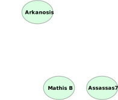

Premiers pas avec Toolforge, la plateforme d'hébergement d'outils de Wikimédia

© Bryan Davis, Artur Jan Fijałkowski, Monjin Friends, CC-BY-SA 4.0
User:Arkanosis — WikiConvention francophone 2022
Public visé
{kind=link}
- Bot
- Site web
- Curiosité
© User:Arkanosis — CC-BY 4.0 — WikiConvention francophone 2022
Public visé
- Création : toolsadmin.wikimedia.org/register
- Demande d'accès : toolsadmin.wikimedia.org/tools/membership/apply
- Notes : notes.wikimedia.fr/p/WikiConvFR22_toolforge
© User:Arkanosis — CC-BY 4.0 — WikiConvention francophone 2022
Toolhub

© Bryan Davis, Artur Jan Fijałkowski, CC-BY-SA 4.0
© User:Arkanosis — CC-BY 4.0 — WikiConvention francophone 2022
Internet

© Everaldo Coelho, Mauro Bieg, LGPL
© User:Arkanosis — CC-BY 4.0 — WikiConvention francophone 2022
Serveur
© Everaldo Coelho, Mauro Bieg, Arkanosis, LGPL
{kind=link}
- Client
© User:Arkanosis — CC-BY 4.0 — WikiConvention francophone 2022
Hébergeur

© Robert Scoble, CC-BY 2.0
© User:Arkanosis — CC-BY 4.0 — WikiConvention francophone 2022
Cloud
© Tango! project, Gnome project, 百楽兎, CC-BY-SA 3.0
{kind=link}
- Buzzword
- … mais pas que
© User:Arkanosis — CC-BY 4.0 — WikiConvention francophone 2022
Cloud ?
© Markus Meier, FSFE, CC-BY-SA 4.0
{kind=link}
- Se débarrasser des préoccupations matérielles / physiques
- Les transférer à un tiers
© User:Arkanosis — CC-BY 4.0 — WikiConvention francophone 2022
Différents modèles de cloud
{kind=link}
- SaaS (Software as a Service)
- ⇒ logiciel prêt à l'usage
- DaaS (Data as a Service)
- ⇒ données prêtes à être manipulées
- PaaS (Platform as a Service)
- ⇒ environnement prêt pour exécuter des logiciels
- IaaS (Infrastructure as a Service)
- ⇒ ordinateur virtuel à configurer soi-même
- …
© User:Arkanosis — CC-BY 4.0 — WikiConvention francophone 2022
Wikimedia Cloud Services

© Brandon Harris, Isarra, CC-BY-SA 3.0

© Bryan Davis, Artur Jan Fijałkowski, Monjin Friends, CC-BY-SA 4.0
.svg){kind=link}
{kind=link}
- Wikimedia Cloud VPS : IaaS (OpenShift)
- Wikimedia Toolforge : PaaS (Kubernetes)
- PAWS : PaaS / DaaS (Jupyter)
- Quarry : DaaS (SQL)
- Wikimedia Toolforge : PaaS (Kubernetes)
© User:Arkanosis — CC-BY 4.0 — WikiConvention francophone 2022
Conditions d'utilisation

© Blogtrepreneur, CC-BY 2.0
- Bénéficie au mouvement Wikimédia
- Sous licence libre
- Pas de données privées
- Pas de spam
- Pas de partage d'accès
© User:Arkanosis — CC-BY 4.0 — WikiConvention francophone 2022
Deux types d'outils
{kind=link}
- Services web
- Jobs
© User:Arkanosis — CC-BY 4.0 — WikiConvention francophone 2022
Concepts
- Compte développeur

© Arkanosis, CC-BY 4.0
© User:Arkanosis — CC-BY 4.0 — WikiConvention francophone 2022
Concepts
- Compte développeur
- Compte outil
© User:Arkanosis — CC-BY 4.0 — WikiConvention francophone 2022
Concepts
- Compte développeur
- Compte outil
© User:Arkanosis — CC-BY 4.0 — WikiConvention francophone 2022
Concepts
- Compte développeur
- Compte outil

© Arkanosis, CC-BY 4.0
© User:Arkanosis — CC-BY 4.0 — WikiConvention francophone 2022
Compte développeur
{kind=link}
- Création : toolsadmin.wikimedia.org/register
- Demande d'accès : toolsadmin.wikimedia.org/tools/membership/apply
- List des demandes : toolsadmin.wikimedia.org/tools/membership
© User:Arkanosis — CC-BY 4.0 — WikiConvention francophone 2022
Clef SSH
{kind=link}
ssh-keygen -t ed25519- [[:wikitech:Special:Preferences#mw-prefsection-openstack]]
ssh $MON_COMPTE@login.toolforge.org
© User:Arkanosis — CC-BY 4.0 — WikiConvention francophone 2022
Compte outil

© Vyacheslav Argenberg, CC-BY 4.0
- Création : toolsadmin.wikimedia.org
become $MON_OUTIL
© User:Arkanosis — CC-BY 4.0 — WikiConvention francophone 2022
Service web
© Everaldo Coelho, Ch.Andrew, Notwist, Carport, LGPL
{kind=link}
mkdir public_htmlecho 'Hello world!' > public_html/index.htmwebservice start- Test : $MON_OUTIL.toolforge.org
© User:Arkanosis — CC-BY 4.0 — WikiConvention francophone 2022
Job
{kind=link}
toolforge-jobs run $MON_JOB --command $MA_COMMANDE --image tf-bullseye-std
© User:Arkanosis — CC-BY 4.0 — WikiConvention francophone 2022
Publicité
.jpg){kind=link}
© User:Arkanosis — CC-BY 4.0 — WikiConvention francophone 2022
== Voir aussi ==

© Bryan Davis, Artur Jan Fijałkowski, Monjin Friends, CC-BY-SA 4.0
- [[wikitech:Help:Cloud Services introduction]]
- [[wikitech:Portal:Toolforge]]
- [[wikitech:Help:Toolforge/Web]]
- [[wikitech:Help:Toolforge/Jobs framework]]
- Toolhub
© User:Arkanosis — CC-BY 4.0 — WikiConvention francophone 2022
~~~~
© Mhammedbenkassem, CC-BY-SA 4.0
{kind=link}
- Wiki : User:Arkanosis
- Mail : jroquet@arkanosis.net
- Matrix : @jroquet:arkanosis.net